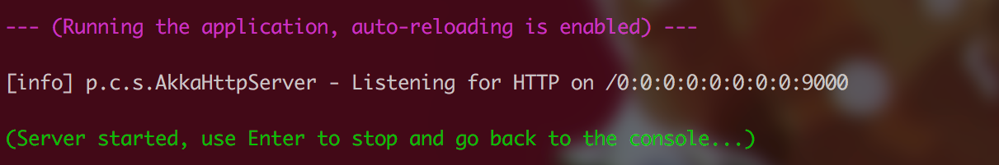
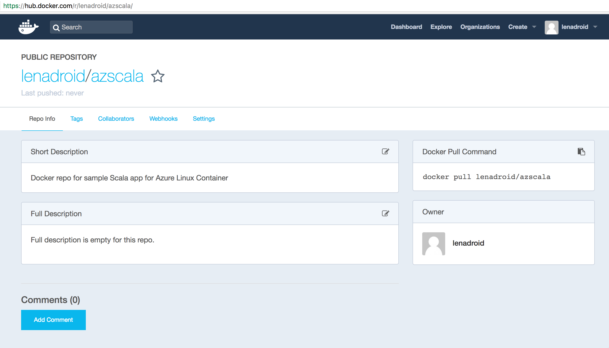
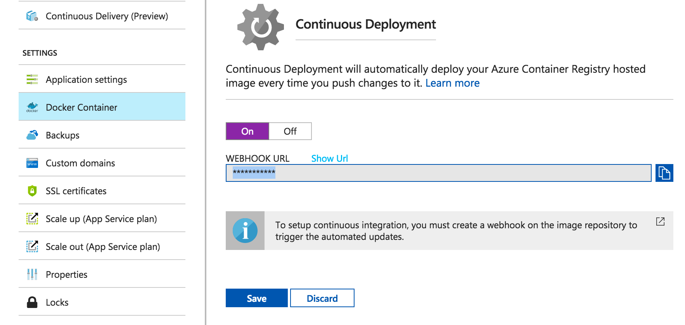

Introduction
In my new role as a Cloud Developer Advocate a goal of mine is to ensure Azure as a platform fulfills needs and expectations of engineers. An important part of this is reviewing every element of Azure to help achieve its maximum potential. In that effort, let’s look at the Azure Web App feature.
Web App is a platform as a service way of running your web applications in Azure. The compute resources may be on shared or dedicated virtual machines (VMs), depending on the pricing tier that you choose. The application code runs in a managed VM that is isolated from other customers.
Recently, Azure introduced support for Web App for Linux and Containers. This is a significant improvement, as a lot of web applications and services are based on Linux platforms. With addition of support for containerized web applications, it becomes much easier to host them natively on Linux for more application stacks. That means we can deploy a web application that can run as a docker container directly into Azure Web App for containers.
In addition to Web App, there are other ways of using Linux based or container based applications, such as Azure Service Fabric or Container Service for more complicated architectures of your services, Container Instances for more lightweight or job-like scenarios, or just plain Linux VMs if you prefer having ultimate control through IaaS (infrastructure as a service).
Standard Azure Web App works great for C#, Java, Python, and other supported platforms.
More and more companies are starting to use F#, as it has proven to increase developer productivity, noticeably reduce time-to-market, and keep codebase clean, concise and simple to troubleshoot.
Shortly after the Web App for containers feature had been released, F# OSS Community shared an awesome example of a complete Web Development stack for F# and used Azure Web App for containers to deploy it. If you haven’t heard of SAFE stack for F# for web development - definitely read about it and try it out. SAFE is an acronym for Suave, Azure, Fable and Elmish, but it is not locked into these technologies. It’s possible to use Giraffe instead of Suave, or GCP instead of Azure, you have full freedom of choice. SAFE is also an initiative to encourage more companies who benefit from using this stack for F# Web Development to give commercial support for it, as it’s important for any completely Open Source stack.
As you may know, I am a big fan of functional programming, and it is absolutely amazing to know that you can run F# web apps on Azure so smoothly. If you have tried it as well - let me know and share your experience on twitter with #fsharp #azure tags. I was also curious of how simple it would be to run a JVM web application in some functional programming language. I decided to try it with Scala with its Play framework.
Step 1: Get sbt
Get Scala and install sbt. Check your sbt version after installation, you can do it with:
$ sbt sbtVersion > [info] 1.0.2
Step 2: Create a new project
In case you already have a project, you can use it. Or you can create a project from a Play template using sbt:
$ sbt new playframework/play-scala-seed.g8
Which should result in the following output. It also asks for some versions to make sure your project has exact versioning you need. You can always find exact versions of those libraries in Maven Central repository.
Step 3: Make sure the project runs with no errors locally
$ sbt compile $ sbt run
Make sure you are located in the example directory when you execute these commands. As a result, you should see that your server is running and access, so try accessing it using the URL address displayed:
Step 4: Take a look at the project structure and content

"build.sbt" looks like this:
“plugins.sbt” file
... is located under “project” directory and used to add various plugins. For example, sbt plugin is already stated here by default, but I added a native packager plugin, to be able to use it in the future steps (notice “enablePlugins” setting in build.sbt that actually enables Docker plugin):
addSbtPlugin("com.typesafe.play" % "sbt-plugin" % "2.6.6")
addSbtPlugin("com.typesafe.sbt" % "sbt-native-packager" % "1.2.0")
This plugin will allow us to build a Docker image right from our solution directory.
“build.properties” file
...is also located under “project” directory and simply indicates the version of sbt:
sbt.version=1.0.2
“application.conf” file
... is under “conf” directory and can be used to set Play HTTP key, disable or enable some of the default filters, and many other configuration things. Play uses a secret key for things like signing session cookies, CSRF tokens, built in encryption utilities. For more information about default Play filters visit this page.
play.http.secret.key="<your key here>” play.filters.disabled+=play.filters.hosts.AllowedHostsFilter play.filters.disabled+=play.filters.csrf.CSRFFilter
You can use “sbt playGenerateSecret” to generate a new value.
Per Play Framework best practices:
“Anyone that can get access to the secret will be able to generate any session they please, effectively allowing them to log in to your system as any user they please. Hence it is strongly recommended that you do not check your application secret into source control. Rather, it should be configured on your production server. Production.conf file includes application.conf, but also overrides any sensitive configuration, such as the application secret and passwords.”
Content of “production.conf” under “conf” directory:
play.http.secret.key="<your key here>” play.filters.disabled+=play.filters.hosts.AllowedHostsFilter play.filters.disabled+=play.filters.csrf.CSRFFilter
“reference.conf” files
... provide libraries defaults, they are overridden by any settings defined in the “application.conf” file:
play.filters.hosts {
# Allow requests to
allowed = [".azurewebsites.net", "localhost:9000"]
}
Step 5: Building a Docker image with the application locally
Run the following command to create a Docker image on your machine (note, you need to have Docker installed):
$ sbt docker:publishLocal
You should see your image getting built:
Check that your image exists on your machine by running:
$ docker images
Step 6: Create a repository to store your container image
Now that we have our image built, we can push it to the real container registry. There are several options on where to push it: you can use Docker Hub, Azure Container Registry, or something else.
Pushing the image to Docker Hub
Create an account in Docker Hub, or use existing account to create a repository for your image:

After we have a repository name, we can push our local image. First step is to tag the local image. After tagging is done, you should see a new image with a familiar repository name:
Log in to your Docker account and perform the push:
When this command is done, check your Docker Hub repository for the number of pushes and you should see one! One step closer to success.
Step 7: Create a resource group in Azure
Make sure you have azure-cli installed, and that you are properly logged in with az. A resource group in Azure as a way to group various resources together. We will need one for our Web App and related resources:
Step 8: Create an App Service Plan in Azure
App Service Plan is necessary to indicate various options for Web App. We can assign several Web Apps to a particular App Service Plan. Let’s create one for our Web App:
Step 9: Create a Web App for Containers
Resource Group, App Service Plan, and container image name is all we need to successfully create a Web App:
Open up the port necessary to access our web server:
You should be able to see your Web App created under your Resource Group in Azure Portal:
Open your Web App and you should see:
If you look in Application Settings blade, you can see that your port settings are there:
After the Web App is deployed and running, you can notice that there were a few pulls of your container image on Docker Hub:
Make sure to enable diagnostics for your app to be able to check container logs from Advanced Tools Kudu console:
Step 10: Set up continuous deployment with Docker Hub and Webhooks
To make sure that any changes that you make to your image are applied to your running Web App, it’s good to set up continuous deployment. This way, when you push updates to your image, Docker Hub will notify Azure to update the Web App as soon as possible. To set this up, go to “Docker Container” blade, turn CD on, copy the Webhook URL:

And paste it in your Docker Hub repo:
Check out how it works by making changes to your application, pushing the new image to your repo and witnessing that the Web App updates are now performed automatically on push!
Step 11: Use Azure Container Registry for storing images
Azure Container Registry can provide certain benefits. For example, it can reduce network latency and eliminate ingress/egress charges by keeping your Docker registry in the same data center as your deployments. It also gives you local, network-close storage of your container images within your subscriptions, and full control over access and image names. At the same time, working with Azure Container Registry is very similar to working with Docker Hub.
To create a resource for Azure Container Registry in your desired resource group, do this:

Azure Container Registry is available in several SKUs: Basic, Managed_Basic, Managed_Standard, and Managed_Premium. Although the Managed_* SKUs provide advanced capabilities like managed storage and Webhooks, they're currently in preview, and are unavailable in some Azure regions. Basic SKU is available in all regions.
You can see newly created registry resource in Azure Portal:

There are various ways to find out what login server name your registry has (after you log in):


Similar to the steps with Docker Hub, we also need to tag our image with Azure Container Registry repo name and push the image:

After the image is pushed, it is easy to check it is really in your Azure Container Registry:

Finally, to set Azure Container Registry as a source, we can navigate to “Docker Container” option:

If you used “Managed_*” SKU during creation of container registry, you can also set up Webhooks for automatic Web App updates from image pushes. If you have chosen “Basic”, then just restart your Web App to trigger image pull from the new registry.
To verify that it works, go to “Advanced Tools” option, select Kudu Bash, cd into LogFiles directory, perform ls to see the filename of the log file and cat it to make sure pull worked:

Step 12: Try to deploy your web application and share your story
It is always interesting to see various programming languages and platforms in action, and I encourage you to try Azure Web App for Linux and Containers with a language stack of your choice. Let me know about your experience or whether you are having any issues.
Scaling and autoscaling feature is really cool, try it out:
If Web App sound like what you need, but you are looking for more secure and isolated solution, check out Azure App Service Environments. They enable more security options including Network Security Rules and others.
For more sophisticated scenarios, try our Azure Service Fabric or Azure Container Service with Kubernetes, DC/OS or Docker Swarm.
Connect
Follow me on twitter @lenadroid if you found this article interesting or helpful. My direct messages are open, always happy to connect, feel free to reach out with any questions or ideas!